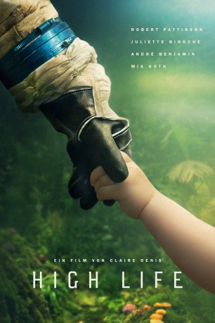
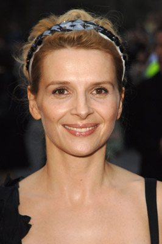

#12042 High Life
 
 IMDB-Wertung: 5.9 / 10
IMDB-Wertung: 5.9 / 10  Metascore: 77
Metascore: 77 
In den Tiefen des Weltalls, weit entfernt von unserem Sonnensystem, leben Monte (Robert Pattinson) und seine kleine Tochter Willow (Jessie Ross) gemeinsam auf einem ramponierten Raumschiff, dessen Besatzung vor einiger Zeit noch aus vielen verurteilten Schwerverbrechern bestand, die sich mit einer gefährlichen Mission von ihren Strafen freikauften. Mit Experimenten wurden sie von der wahnsinnigen Reproduktionswissenschaftlerin Dibs (Juliette Binoche) gequält, bei denen bis auf Monte und Willow alle ums Leben kamen. Monte ist ein stiller Mann, der sich eine harte Selbstdisziplin auferlegt hat. Doch wenn er mit seiner Tochter zusammen ist, wird aus ihm ein zärtlicher Versorger. Nun sind die beiden die letzten Überlebenden der Crew und nähern sich in völliger Isolation ihrem letzten unausweichlichen Ziel: einem schwarzen Loch und damit auch dem Ende von Zeit und Raum.
BDRIP DUBBED
Jahr: 2018
Dauer: 113 Minuten
FSK: 16
Land: England Studio: Pandora Film VerleihTonspuren: AAC2.0 - ,
Untertitel:
Auflösung: 1080p (1920x1040) Größe: 9082 MB
Genre: Drama, Sci-Fi, Abenteuer, Mystery
Regisseur: Claire Denis
Drehbuch: Claire Denis, Jean-Pol Fargeau, Geoff Cox, Andrew Litvack, Nick Laird
Soundtrack: Stuart Staples, Tindersticks
Darsteller:
 Robert Pattinson als Monte
Robert Pattinson als Monte-  Juliette Binoche als Dibs
 André Benjamin als Tcherny
André Benjamin als Tcherny Mia Goth als Boyse
Mia Goth als Boyse- Agata Buzek als Nansen
 Lars Eidinger als Chandra
Lars Eidinger als Chandra Claire Tran als Mink
Claire Tran als Mink- Gloria Obianyo als Elektra
- Victor Banerjee als Indian Professor
- Ewan Mitchell als Ettore
- Scarlett Lindsey als Willow Baby
- Jessie Ross als Willow
- Juliette Picollot als Journalist
- Mikolaj Gruss als Little Monte
- Weronika Wachowska als Little Girl
- Mikolaj Zeman als Little Boy
- Ruslan Astraszewski als Stowaway
- Magda Piotrowska als Stowaway
- Dawid Gluchowski als Stowaway
- Lukasz Osik als Stowaway
- John Kimani Njeri als Prisoner
- Joni Brauer als Newborn Willow
- Johann Bartlitz als Newborn Willow
- Ernest Lebouco als Boy by the Beach
Datei: X:\2018(G-M)\High Life (2018, FSK16, 1920x1040).mkv seit 16.11.2019
Festplatte: HD 2018(G-Z)-2019(A-Z)
 Es gibt insgesamt 138 Filme in der Gruppe '2018(G-M)'
Es gibt insgesamt 138 Filme in der Gruppe '2018(G-M)'